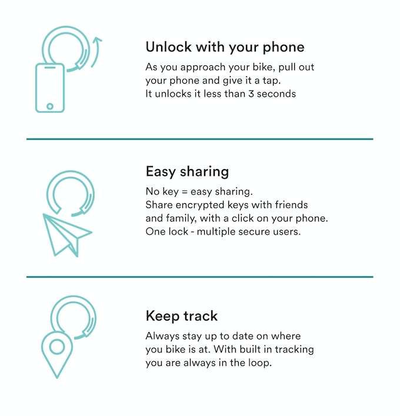
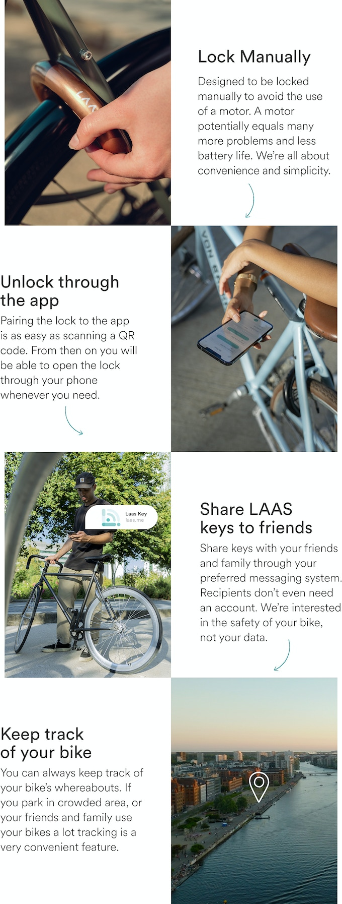
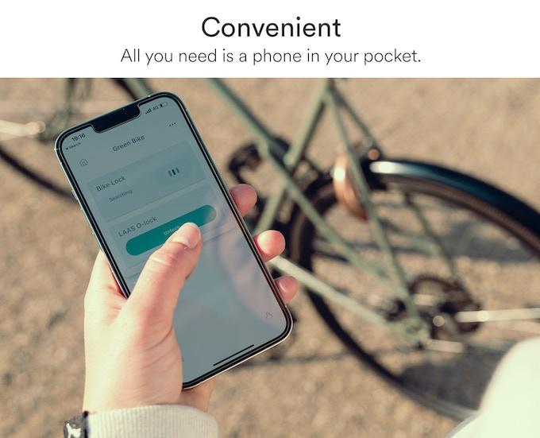

O-lock security ring

The O-lock is as secure as any ring lock on the market. Can it be cut? Of course, the thief can cut any lock with patience. What it can’t, though, is being lockpicked, as there is no keyhole.
Because we simplified the lock to make it more sturdy, we have the most extended battery life of +2 years. The O-lock uses a non-rechargeable CR123 battery + emergency power in case the user ignores all low-power notifications for more than a month. +2 years battery life is achieved by the Bluetooth being in sleep mode most of the time and by taking advantage of the user’s muscle power to lock it rather than using a motor.
The O-lock is simply put more… simple. Less tech means fewer things to go wrong. That’s why we don’t stuff it with features like alarms that will go off when a friend of yours borrows your bike. Our App is made for private users, enabling a smooth sharing feature.

 

Jordi Osarenkhoe Petro & Biel Tomas Vidal
We're students at Borja Moll. Currently at 2nd course. This is our first project for DIW subject.